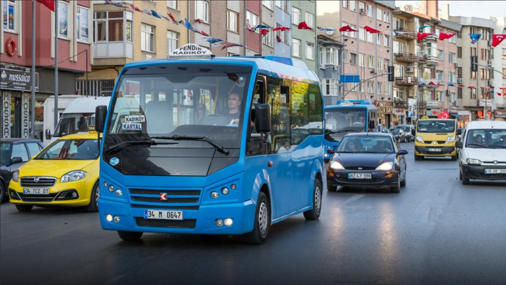

Şehir içi Ulaşım
Taksi
Kaman şehir içi taksi hizmeti, şehir genelinde ulaşmak istediğiniz her noktaya hızlı ve güvenli bir ulaşım imkanı sunar. Taksiler, özellikle minibüs hatlarının gitmediği bölgelerde veya dilediğiniz saatte ulaşım ihtiyacınız olduğunda ideal bir çözüm sağlar. Fiyatlandırma, gidilecek mesafeye ve konuma göre belirlenir; böylece şehir içi ulaşım hem esnek hem de kişiye özel bir deneyim haline gelir. İster yurttan çarşıya, ister çarşıdan farklı bir mahalleye, taksiler istediğiniz saatte hizmetinizdedir ve sizi konforlu bir şekilde hedefinize ulaştırır.

Minibüs
Kaman minibüs hattı, şehir içi ulaşımda ekonomik bir seçenek sunar. Özellikle öğrenciler ve şehir içi kısa mesafeler için uygun olan minibüsler, çarşı ile yurt arasındaki en ucuz ulaşım aracıdır. Seferler her 1 saatte bir düzenlenir ve hem yurttan çarşıya hem de çarşıdan yurda düzenli bir şekilde hizmet verir. Minibüsler sabit saatlerde çalıştığı için planlı bir ulaşım sağlar ve bütçenizi zorlamadan şehir içi hareket etmenizi kolaylaştırır.
Şehirler Arası Ulaşım